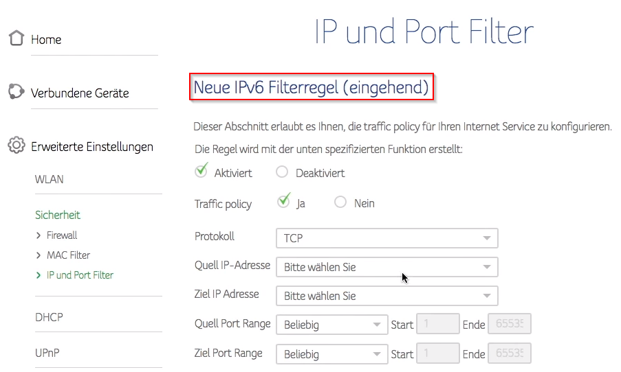

In den Einstellungen meiner ConnectBox CH7465LG-LC gibt es IP und Port Filter nur für IPv6. Ich überlege zwecks VPN Zugang eine öffentliche IPv4 Adresse zu beantragen. Wie kann ich für diese IP Adresse dann die entsprechenden Einstellungen vornehmen wenn es im Router Menü nur IPv6 Filterregeln gibt?

Es sollten die Menüs für v4 angezeigt werden, sobald man eine öffentliche IPv4 Adresse hat.
Has anyone contacted customer support for their IPv4 routing options to change their external IP address from IPV6. I am unsure how to contact customer services to complete the change on my connect box.
Daza85
Bearbeitet von Daza85An update of the firmware of my connect box was required. I called the customer support and they updated it. Now it is working.
I contacted customer services over phone. I used the official phone number you find at the contact details and explained that I want to setup a VPN connection.